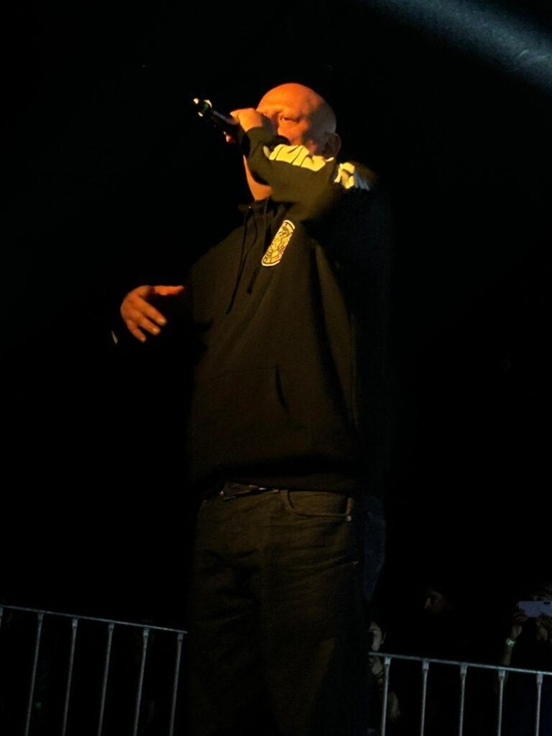
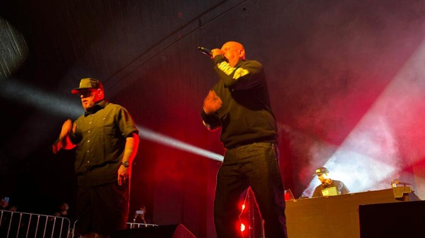
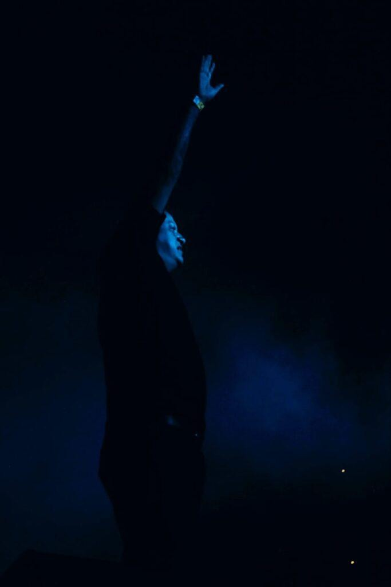
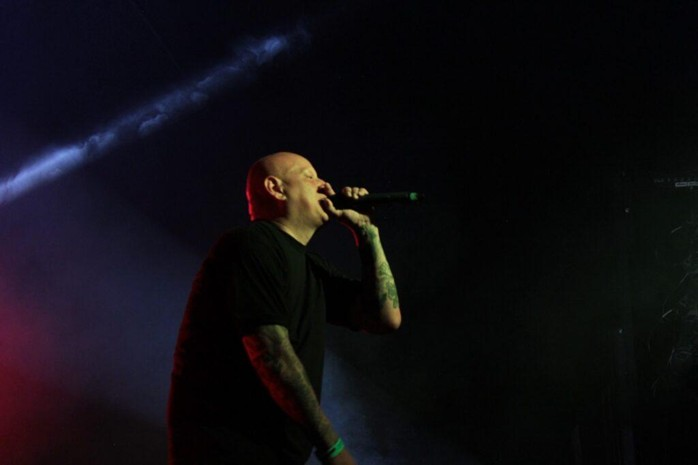
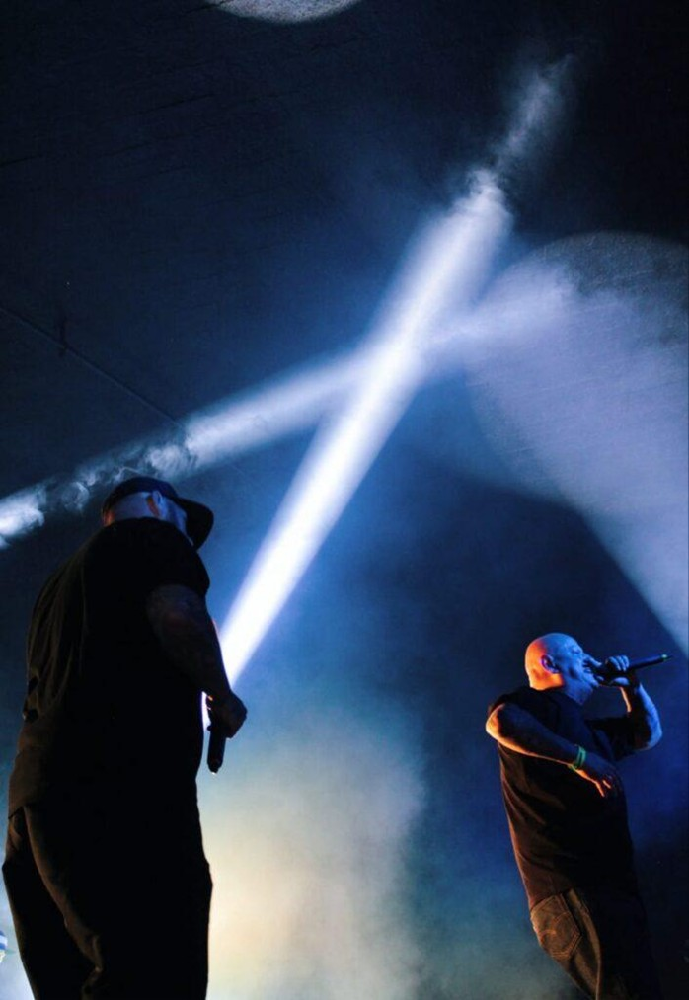

El pasado 8 de junio, el Foro Alarcón se llenó de energía pura con la música de los aclamados Delinquent Habits. El grupo de rap originario de Los Ángeles dio una verdadera cátedra en la Ciudad de México tras casi una década de espera.
La energía en el foro se hizo notar desde el primer segundo. Al ritmo de un rap crudo y directo, los Delinquent Habits demostraron su fuerza y pusieron en alto, una vez más, la cultura del hip hop global con ese sabor West Coast que los caracteriza.
HITS DE BARRIO
Sonaron himnos inmortales como:
"TRES DELINQUENTES"
"HERE COME THE HORNS"
Fue una odisea de ritmos que conectó a generaciones. La fuerza de sus rimas sigue intacta, demostrando que el tiempo solo ha servido para consolidar su estatus de leyendas en el asfalto mexicano.




